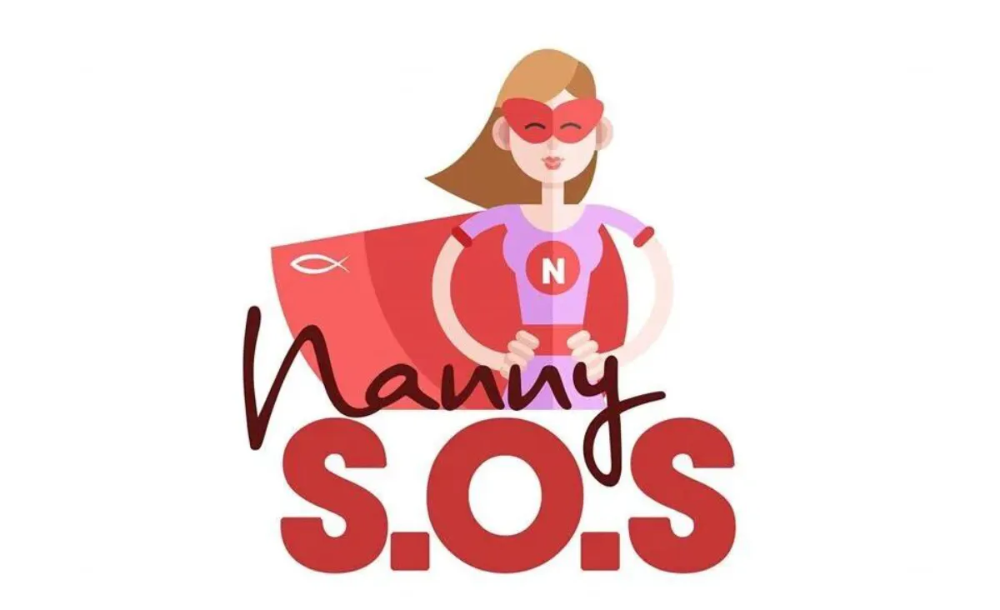
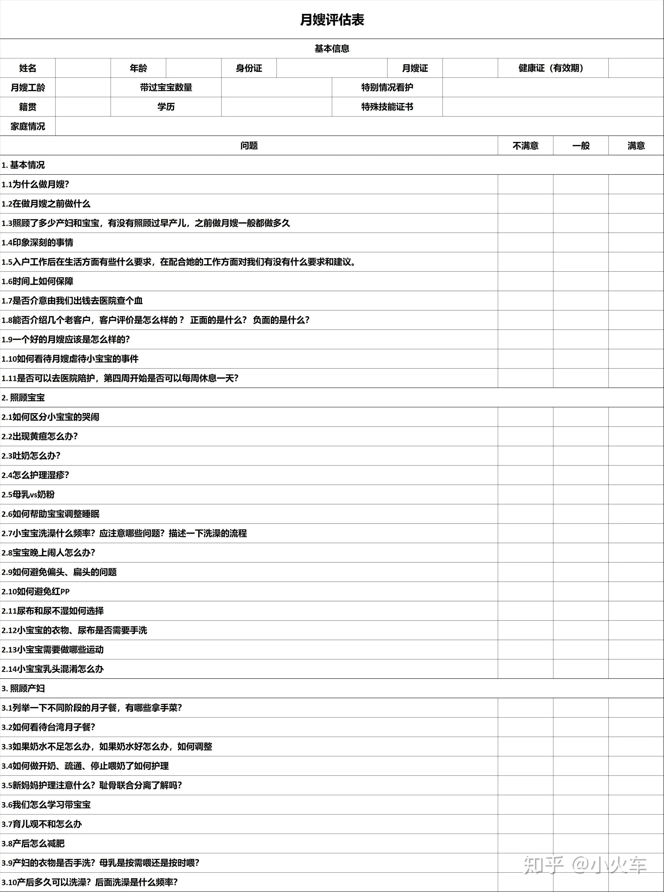
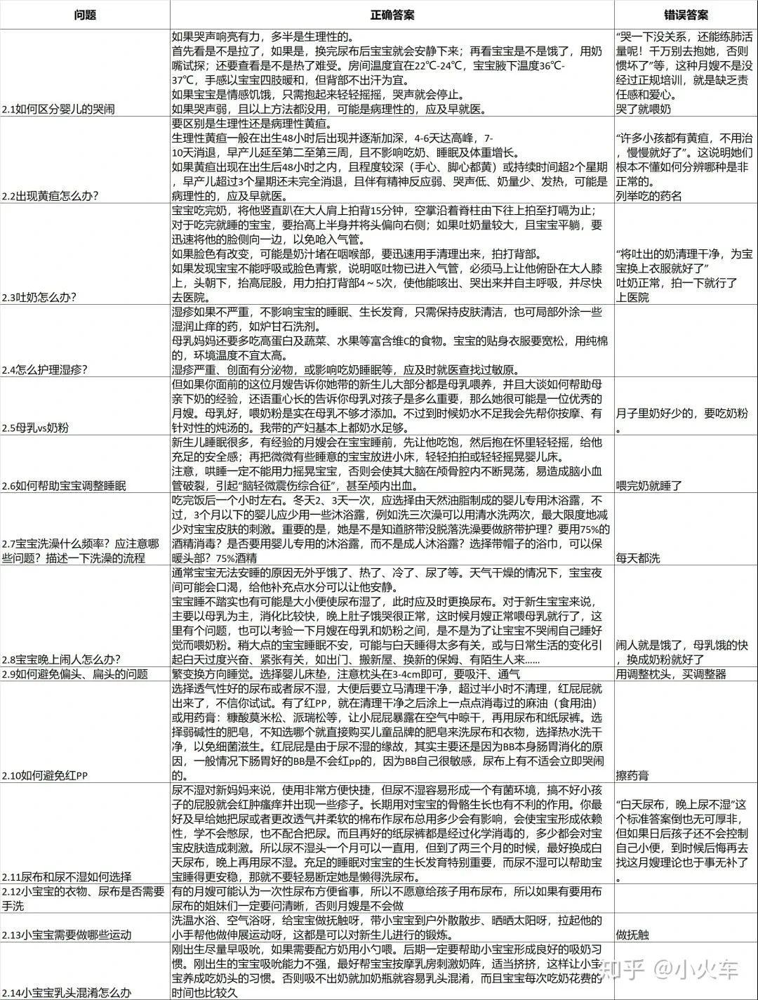
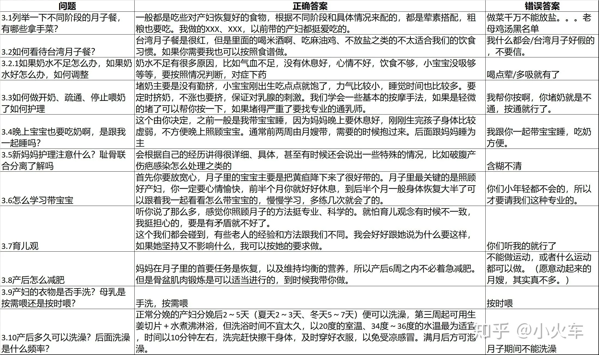
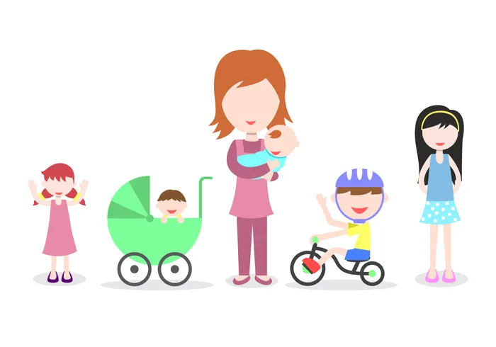
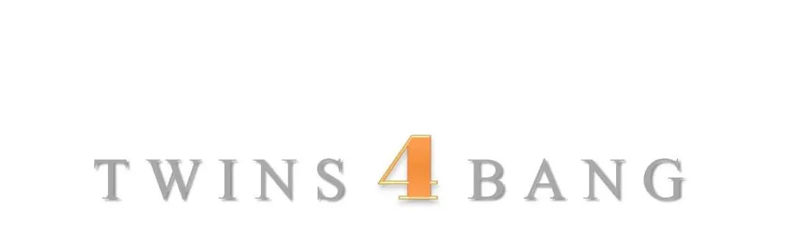
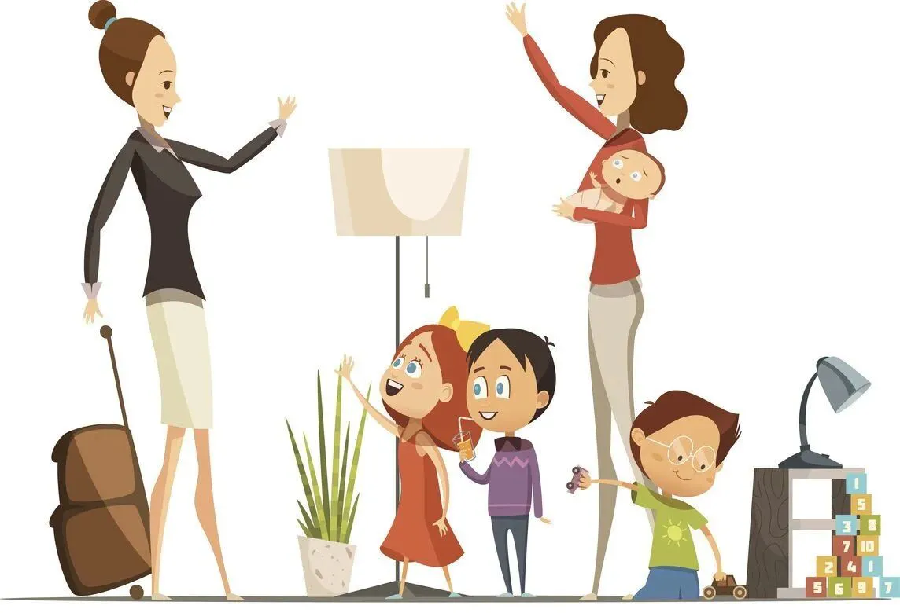
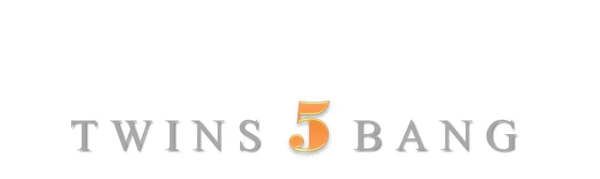
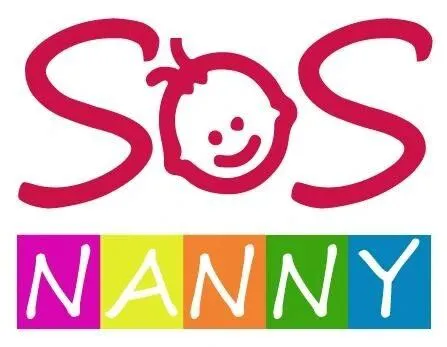
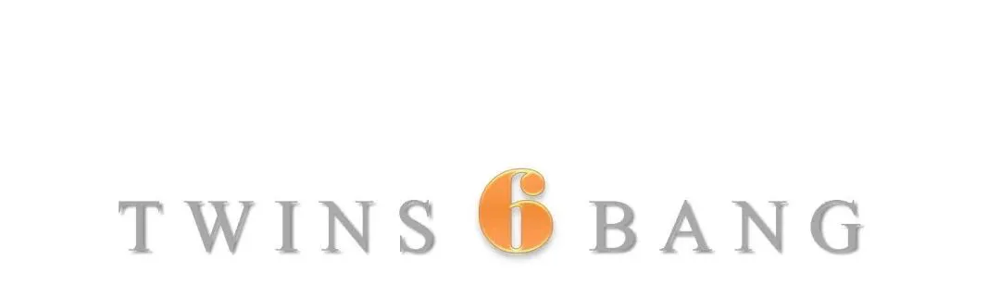

文|圆圈妈
网图|侵删
【帮主】圆圈妈妈：
代替父母照料孩子的人应该能够给予孩子父母般的关爱，要用一颗真诚的心去爱每一个孩子，欣赏每一个孩子的个性特点，为孩子的每一个点微小的进步而高兴，这会鼓励孩子不断进步，并且能够用和蔼的态度来管理孩子，，没有苛求，也没有压制。
摘自《斯波克父母经》第一章“学习面对生活中的焦虑—要不要外出工作”
代替父母照料孩子的人，可以是孩子的爷爷奶奶，外公外婆，也可以是与孩子没有血缘关系的保姆.
这是孖仔帮双胎专栏【孖妈来了】的第七篇文章，来自双胞胎糖糖果果妈妈的投稿。
关键词：
【如何给双胞胎找合适的保姆】
【如何给保姆安排工作】
双胞胎姐妹花糖糖果果妈妈@骑单车的鱼：
糖果姐妹目前4月+，白天我妈和保姆“2对2”，晚上我和队友带，保姆打下手，我妈休息。
这种带娃模式目前还算顺利，不至于累成狗！大家分工合作，各司其职，关键点是找到一个给力的保姆！
与大多数双胞胎家庭一样，我们在找保姆的路上也不顺当。当月嫂还在伺候我月子，我就开始物色人选，希望在我休完产假后落实下来。
在这3个月中，最长的用了1个月，最短的用了6个小时，有时是我们觉得那人不合适，有时是那人嫌弃带双胞胎太辛苦，不愿意，划不来！
前前后后换了8个保姆，最终让我确定了现在这位，这其中的折腾，只怕只有请过育儿嫂的妈妈能体会（此处省略一万字）
这里分享我找保姆的经验和如何安排保姆的工作，更好地带养双胞胎。
怎样找保姆？
请保姆真的看运气，靠缘分！
而我找保姆基本上凭感觉！网上有很多教面试保姆的攻略，可是对我没啥帮助！
▲孖仔帮双胞胎育儿群一妈妈分享的▲
我觉得，保姆请到家里来是要跟其相处在一起的，每天抬头不见低头见的！这人必须是我喜欢的，合我眼缘的，其次才考虑她是否有相关工作经验！
现任保姆，是朋友介绍的，看到她的第一眼，我觉得她特别亲切，像邻家大姐一样给人感觉很实在，靠谱！
再听朋友说她在上家的工作表现，我基本上就确定是她了。试工期间，她实际的带娃情况，也确实没有让我们失望！
虽然她也有不完美的地方，比如讲电话很大声，会忘记洗手就给宝宝换尿布….也没有带双胎的经验，但是她对待双胞胎的那种耐心和爱心，我觉得，那就是我们需要的！
除了合眼缘，还有一个最基本的就是，这人要善良！
善良是本分，这是大前提！是否有育儿证书，是否高学历，是否有经验，都可以放在其次！
为什么不请两个保姆？
因为家里还有我妈帮忙带，她照顾小宝宝有经验，为了替我省钱，她甚至还提出要一人带俩娃。
可是我不希望她太累，再说她也年纪大了，怕她吃不消，请个保姆做主力，她来搭把手，会松气很多！
再者，两个保姆意味着双份工钱，这是最直接的原因！
不过，以上都是其次，最重要的是，两个保姆各带一个宝宝，不好管理，担心她们会相互较劲，遇到事情互相推脱，最终连累到两宝宝没有交流互动，作息方面总是不一致！
这是我最不愿意看到的！
为什么不让保姆带俩娃睡
有的家庭请保姆是为了晚上有人带俩娃睡，可我不是！
我有强迫症，觉得孩子在谁的手上都没有在自己手上安全些，放在自己身边，虽然会很累，没好觉可睡，但我会安心些！
而且糖果已经4个多月了，我也在等待时机，给姐妹俩做睡眠训练。
保姆毕竟是保姆，做事情比较任务式，只管喂奶哄睡不哭就行，睡眠训练那样的苦差事，她不一定会完全听命与我！
团队成员的做法不一致，正是睡眠训练的大忌！我不能自己搬石头砸自己的脚！
我妈建议保姆带一个睡， 我带一个睡，然后隔段时间交换。
不知道为什么，我特别反感这种操作，我觉得这样做是在折磨无辜的两个宝宝，她们好不容易适应了枕边人，结果又换了！
但如果不交换，那对被保姆带着睡的宝宝很不公平！我这样玻璃心的妈妈必定承受不了良心的谴责！
最重要的是，我相信孩子跟谁睡就会跟谁比较亲，不能忍受孩子亲近保姆多过亲近与我。
那种从小就培养起来的亲密母子关系是长大后不管怎么弥补都替代不了的！
现在她们会认人了，只要有我在，她们就特别乖，爱笑，虽然这让我妈和保姆很头疼，但说心里话，我觉得特别自豪和特别有成就感！
被孩子们依赖着，信任着，再苦再累也值得！
如何安排保姆的工作？
家里有俩娃，事情多又杂，这也是带双胞胎特别累的原因，繁琐重复的事情实在太多了！而且这不是帮手多就能避免的！
恰恰相反，即便家里只有2人带娃，其实只要把工作内容和标准要求跟保姆交代清楚，然后严格执行，基本上可以保证不鸡飞狗跳！
我的方法是，把两宝宝的作息时间，具体要求都逐条写清楚，打印出来，贴在客厅墙上，精确到几点钟喝奶，喝多少奶，几点钟睡觉，睡多久，怎样陪玩，玩什么都清楚地写出来！
注意一定要把对保姆的标准和要求，白字黑字写出来，做到够清晰，不含糊！
可能这跟我的工作性质有关，喜欢有计划，有条理地做事情。
其实只要把指令说清楚，把工作职责细则化，以及一些特别要求格外提示下，那么保姆做起事情来就有章可循，不至于没头没脑，乱了分寸！
注意与保姆的沟通方式
我妈的角色是指挥和监督者，煮饭菜和必要时搭把手，有时候她会对保姆的做法有意见，我让她必须私下跟我商量，达成一致后，再由我向保姆传达！
我觉得，给保姆交代工作，最好是由始至终由同一个人来完成，而这个人不是我妈，不是我老公，必须是我。免得信息混乱，让保姆无所适从，不知道到底该听谁的！
有时候，我和我妈在育儿观念上不统一，但不会在保姆面前争论，还好我妈比较通情达理，即便有时真看不惯我的育儿方式，也不会在保姆面前说什么。
保姆有任何疑问，我妈都会让她找我说，自己从不出面， 我想，我妈和保姆至今相处得好，估计跟这个脱不了干系！
保姆是人
更是你的育儿合伙人
虽然我和保姆之间是雇佣关系，但实际生活中，我都把她当自家大姐那样对待。
吃的跟我们一样，外出游玩会带上她一起去，今年过年，我妈还给她封了一个大红包，我也买了份小礼物送她。
给保姆一份合理的薪水是基本，而关键是提供一个尊重和谐的生活氛围，这对她，对我和家人，对糖果姐妹俩来说，都是弥足珍贵的！
我相信，人与人之间的尊重是相互的，我对她的好，她也会更加尽心尽力地照顾糖果姐妹俩！
当然，也不排除有些保姆总是喧宾夺主，不识抬举，经常拿所谓的经验凌驾于你，那这样的保姆不要也罢！
我的建议是，有合适的，就真心对待，不合适的，就尽早换，找到满意的为止！
就跟找对象一样，找保姆，绝不将就！
最后，祝愿大家都能给双胞胎宝宝们找到称心如意的保姆，做你的育儿好帮手！
1
END
1
原文作者/双胞胎糖糖果果妈妈
编辑排版/圆圈妈妈
写手招募
如果你是爱分享的双胞胎爸爸或妈妈
欢迎投稿至孖仔帮【双胎专栏】
分享出你和双胞胎的成长故事
添加微信sgguy-com
备注“投稿”
-END-
今日互动话题
#给双胞胎找保姆的那些脑壳疼，你经历过吗？#
评论区聊一聊呗！
微信公众号：孖仔帮
ID : twinsbang
专注双胞胎孕育，养育，教育经验分享
@www.sgguy.com
扫码关注我们
我知道你在看哟










